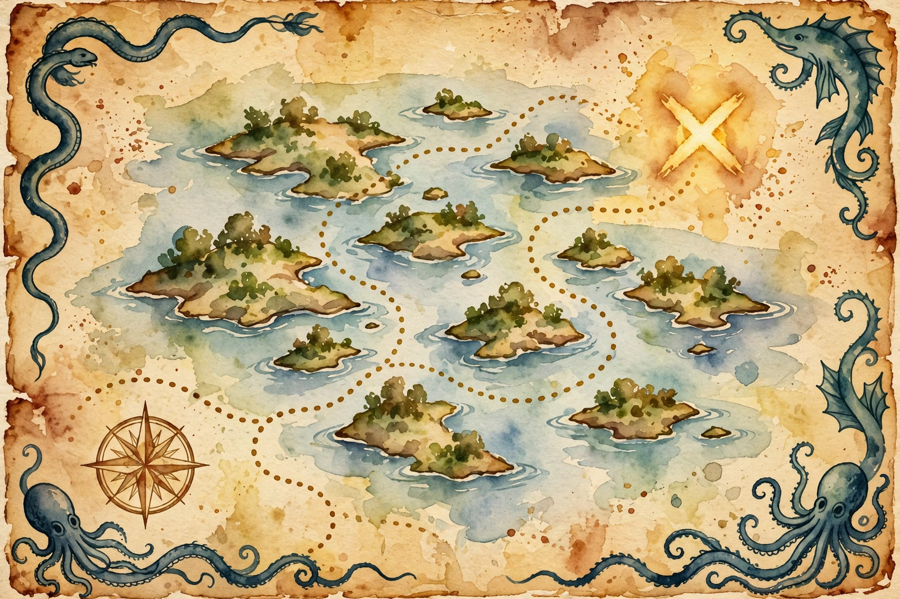

Naval Ravikant · The Spearhead Sessions · Companion
How to Angel Invest
The Spearhead collection on angel investing: why it is a great way to lose your money, the three paths to equity, the portfolio math where one 1,000x winner pays for ninety-nine zeros, and why deal flow, judgment, and capital, in that order of difficulty, run the business.
Illustration. The orchard: fifty saplings, one giant tree. AI-generated watercolor made for this page.
Watch. The official Naval podcast episode video. Use the chapter menu above to jump to any section of this companion as you listen.
The Wisdom Index: every nugget in this companion
00:00
Open-sourcing Spearhead
Nivi opens with context. The old feed did Venture Hacks, the game theory of venture capital for entrepreneurs raising money, and then the How to Get Rich series, general wealth advice. This series is narrower: for people in tech hubs who started investing but are not yet pros. Brand-new angels, VCs, and founders dabbling.
The series open-sources what Naval and Nivi teach at Spearhead, their fund that trains the next generation of angel investors: take founders, give them small checkbooks, and teach them investing and mentorship as a lifelong skill. The agenda is advanced: fair valuations, bridge-round pitfalls, pro rata mechanics, squeezing into VC-led rounds, reading co-investors, sizing markets fast, and whether to specialize or diversify.
Wisdom nugget 1
Source factLearn the advanced game on purpose
What happened. Naval and Nivi say the basics are covered elsewhere (Paul Graham's essay, Venture Hacks) and aim this series at practitioners.
Why it matters. Beginners study basics. Pros study mechanics. Knowing which room you are in saves years.
Principle. Skip to the material written for people already in the arena. The basics are a commodity.
00:05
A great way to lose your money
The disclaimers are blunt: most people who try angel investing lose money. The old quip: "How do you become a millionaire? Start as a billionaire and start investing." Bad timing or plain bad luck will do the rest.
And the epistemic frame: this is one unique approach, not math or science. Technology and the investment ecosystem change fast. A decade ago Y Combinator was brand new and AngelList did not exist. As Marc Andreessen says, "strong opinions loosely held". They hold contradictory opinions and change their minds, which is what intelligent people do.
Angel investing is a great way to lose your money.
Naval Ravikant, from the episode
Wisdom nugget 2
Source factHold the method loosely
What happened. Naval warns that any angel method is one approach among many, in a market that reinvents itself every decade.
Why it matters. Tactics expire. The investors who survive are the ones who update.
Principle. Learn every method as a draft. Keep the ones that survive contact with your own results.
00:12
Own a piece of a business
The foundation restated: the way to make money in tech, like any industry, is to own a piece of a business. Renting out your time will not make you rich. "equity, a piece of a business, to gain your financial freedom."
Three classic paths. One: start a company and succeed as a founder. High stress, grueling, few succeed, and you may need several rounds at bat. Two: become an extremely competent executor, get recognized, and take equity in a rocket ship already at scale, the Uber or Dropbox path, where the best engineers and designers get recruited into the winners. Three: angel invest.

Illustration. The map with no guarantees: a unique approach, not a formula. AI-generated watercolor made for this page.
Wisdom nugget 3
Source factGet equity or stay renting
What happened. Naval lists the three routes to substantial equity: founding, joining a rocket ship early, or angel investing.
Why it matters. Salary rents your time. Every path to freedom runs through ownership.
Principle. Pick one of the three equity paths deliberately. If you are on none, you are on the treadmill.
00:25
The portfolio math
Here is the math that makes angel investing rational. Find 10, 20, 30, 50 investments like the good ones, and one or two will pay off. Naval's own net worth sits mostly illiquid in startups, and he sleeps well: hundreds of teams of brilliant entrepreneurs, leveraged through code, capital, and zero-marginal-cost products, all working hard to build massive things. Only a few need to work for the whole portfolio to balance out.
The headline numbers: a 1,000x return somewhere in the portfolio is not unheard of. Make 100 investments to find it, let the other 99 go to zero, and the portfolio still returns 10x overall.
One winner pays for ninety-nine zeros
100 angel investments. One returns 1,000x. The other 99 go to zero. The portfolio still returns 10x.
Source. Episode: the 1,000x / 100-investment / 10x portfolio math. Bars are the episode's own numbers.
Illustration. The orchard: fifty saplings planted, one giant tree pays for all. AI-generated watercolor made for this page.
Toy: the angel portfolio simulator
The episode's math: you need very few winners. Set your number of bets and your assumed winner rate.
Wisdom nugget 4
Source factBuy enough tickets for the outlier
What happened. Naval shows that one 1,000x winner across 100 bets produces a 10x portfolio even with 99 zeros.
Why it matters. Angel investing is not stock-picking. It is outlier-hunting. The unit of success is the portfolio, not the company.
Principle. Size your bets so you can make dozens. One concentrated bet is a gamble. One hundred small ones are a strategy.
00:38
Deal flow, judgment, capital
Three things get you into the investing business: deal flow, judgment, and capital. Capital is the hard one. Either you made money before, or people trust you with theirs. Naval is candid that many top VCs are related to, married to, or from families with enormous capital, or manage money for billionaires. Access to capital is what got them in.
Spearhead is the workaround: give founder-investors million-dollar checkbooks, then help them raise from limited partners later. Friends and family is the other route, hardest or easiest depending on who you are. Judgment, meanwhile, comes the slow way: "good judgement comes from experience and experience comes from bad judgement".
Wisdom nugget 5
Source factSolve capital first, judgment second
What happened. Naval ranks capital as the hardest of the three requirements and names its usual sources: prior wealth, trust, or family money.
Why it matters. Beginners obsess over picking winners. The binding constraint is usually having money to invest at all.
Principle. Secure a checkbook before you polish your thesis. Then earn judgment the expensive way: by being wrong.
00:50
Brand is deal flow
Judgment and capital are not enough without deal flow, and brand manufactures it. Ryan Hoover has one of the best Twitter games on record, community-building as a side effect of breathing, which gives him a natural angel brand in consumer. Patri Friedman staked out startup countries and sovereign-individual projects, a unique thesis that pulls the entire libertarian deal flow to him.
The warnings: do not build a brand around a single technology transition, because when the transition completes, so does your brand. Do not go too narrow or back a space that never arrives. A clean-tech brand built only on solar dies if solar misses its schedule. And note the paradox: beginners feel pressure to specialize, but the top firms are generalists, or specialists in being weird, like Founders Fund with deep tech.
Wisdom nugget 6
Source factBe known for something wide
What happened. Naval shows how a public thesis attracts proprietary deal flow, then warns that narrow brands expire with their thesis.
Why it matters. Deal flow is the compounding asset. A brand that dies in five years is a wasting asset.
Principle. Build your reputation around a durable curiosity, not a dated technology. Weird and wide beats narrow and neat.